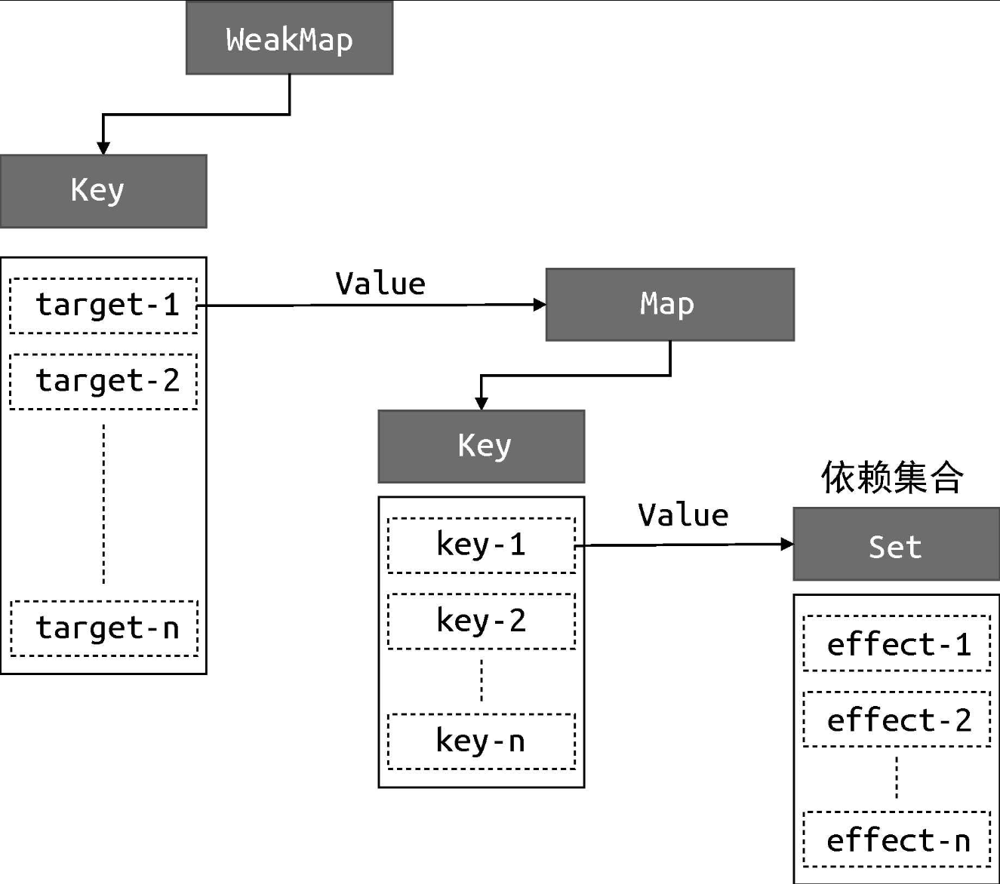

<body>
  <title></title>
  <h3>weakMap、map与set的关系</h3>
  
</body>
<script>


  const bucket = new WeakMap()

  const data = { text: 'hello world' }
  const obj = new Proxy(data, {
    get(target, key) {
      track(target, key)
      return target[key]
    },
    set(target, key, newVal) {
      target[key] = newVal
      trigger(target, key)
    }
  })

  function track(target, key) {
    if (!activeEffect) return
    let depsMap = bucket.get(target)
    if (!depsMap) {
      bucket.set(target, (depsMap = new Map()))
    }
    let deps = depsMap.get(key)
    if (!deps) {
      depsMap.set(key, (deps = new Set()))
    }
    deps.add(activeEffect)

  }

  function trigger(target, key) {
    const depsMap = bucket.get(target)
    if (!depsMap) return
    const effects = depsMap.get(key)
    effects && effects.forEach(fn => fn())
  }

  let activeEffect
  function effect(fn) {
    activeEffect = fn
    fn()
  }
  effect(() => {
    document.title = obj.text
  })

  setTimeout(() => {
    obj.text = 'hello vue3'
  }, 1000)
</script>